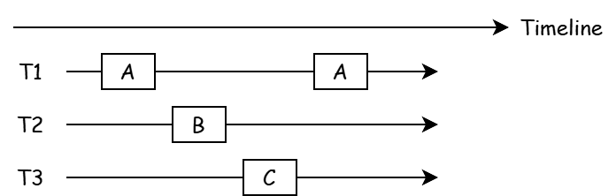
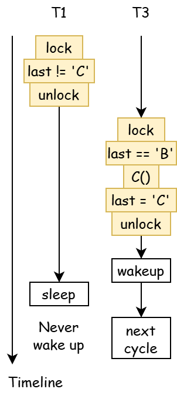
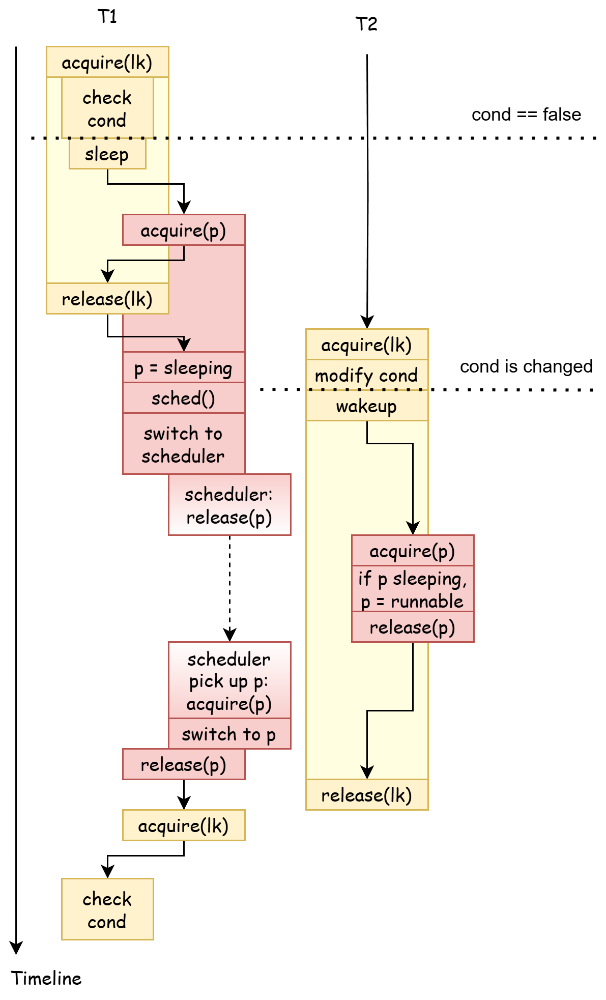

Mutual Exclusion & Synchronization¶
synclab & xv6lab8 Code Branch
https://github.com/yuk1i/SUSTech-OS-2025/tree/xv6-lab8
Use the command git clone https://github.com/yuk1i/SUSTech-OS-2025 -b xv6-lab8 synclab to download the synclab code.
Enter the sync-lab folder, read the README.md (recommended to read after class), and run the example programs inside.
For the xv6 part of the code, refer to the main repository, and use git clone https://github.com/yuk1i/SUSTechOS xv6lab8 to download the code.
Multiple Processes Programming¶
It is often said that processes have independent address spaces, while threads share an address space. This introduces the concept of shared memory: multiple threads within a process share a portion of the memory space.
This leads to a problem: what happens when one thread is reading or writing to a memory address while another thread is also reading or writing to the same address?
Mutual Exclusion¶
Function Declarations
In the following code, we will use simplified functions to represent thread creation and related operations:
-
create(func): Creates a thread that starts running from the given functionfunc. -
join(): Waits for all threads to exit. -
usleep(): Waits for a few microseconds.
Before understanding why we need mutual exclusion, we must first grasp what a data race is.
Counterfeit Alipay¶
code
#include "thread.h"
unsigned long money = 30;
void deduct() {
if (money >= 1) {
usleep(1);
money -= 1;
}
}
void main() {
for (int i = 0; i < 100; i++) create(deduct);
join();
printf("money = %lu\n", money);
}
Compile and run with gcc -O2 alipay.c && ./a.out to experience being a billionaire.
Counterfeit Alipay creates 100 threads, each checking if there is money in the wallet and deducting if there is (local ordering). usleep is used to force a period of waiting.
In this problem, the wallet money is the shared resource. We observe that money suddenly becomes a very large value due to an overflow caused by subtraction on an unsigned long. Consider the following execution diagram, enforcing a global ordering on all white blocks:

In the worst case, when only 1 yuan remains in the wallet, two threads both check and see a balance of 1 yuan, so both deduct, leading to an overflow.
Multithreading in a Mathematical Model
Label the steps money >= 1 ? and money-- as A and B. A always executes before B, written as A > B (A happens-before B).
We find that the global ordering of multithreaded execution steps is a permutation of each thread's local ordering steps.
The global ordering consists of four steps {A1, B1, A2, B2}, where any permutation satisfying the local orderings A1 > B1 and A2 > B2 is a valid global ordering.
For example, (A1, B1, A2, B2), (A2, B2, A1, B1), and (A1, A2, B1, B2) are valid global orderings, with the latter being the source of the bug.
If you're interested, try answering this question: We can mathematically verify the correctness of a multithreaded program by enumerating all global orderings and ensuring none cause bugs. From the perspective of computational complexity theory, is solving this problem a P problem, an NP problem, or an NP-complete problem?
If we remove the usleep after if (money >= 0), the program is likely to produce the correct result. This is because the instruction sequence for checking and deducting is so short that a data race is unlikely. However, unlikely ≠ impossible. When dealing with concurrency, we need correctness.
In the mathematical model, (A1, A2, B1, B2) means both thread 1 and thread 2 observe money == 1 and both execute money--. The solution is to make (A, B) indivisible. This can be understood from multiple perspectives:
-
We no longer allow
(A1, B1)and(A2, B2)to interleave, i.e., we exclude(A1, A2, B1, B2)from the set of "valid global orderings." -
We can package
(A, B)as an uninterruptible whole. From the perspective of other CPUs, these two events happen instantaneously (i.e., atomically). This means other CPUs cannot observe the intermediate state of this whole. -
Note that the second description is essentially a Critical Section.
Takeaway Message
Humans are single-threaded beings. In the model of multiprocessor programming, single-threaded thinking is no longer always correct; shared variables can be modified by others at any moment.
Single-Core Processor¶
If you understand the three perspectives above, the solution on a single CPU becomes clear: we prevent a context switch between (A, B). This is the first method we learn for achieving mutual exclusion: disabling interrupts. This is also how the kernel implements an "uninterruptible whole."
However, disabling interrupts is not a universal solution. User mode cannot disable interrupts. (Recall: Conditions for allowing interrupts)
Atomic Compare-And-Swap Instruction¶
For the Counterfeit Alipay example, we can understand the issue from another angle: when thread 2 checks money and before it performs money--, thread 1 has already modified money, making thread 2's condition for money-- invalid.
We can abstract this further: when attempting to modify a variable (memory address), its value is no longer the original value.
Fortunately, modern CPUs generally provide a special instruction: when modifying a memory address's value, it checks if the address's value matches the expected original value. This is called the Compare-And-Swap (CAS) instruction. In most cases, this instruction is executed atomically, meaning it appears to complete instantaneously to other CPUs.
We can modify the deduct function as follows, clearly distinguishing the shared variable money from its local copy local_money. Whenever we want to modify money, we use __sync_bool_compare_and_swap(&money, local_money, local_money - 1) to update the memory address &money, expecting its current value to match the value we read (local_money). If it matches, &money is updated to the new value (local_money - 1) and returns true. If it doesn't match, it means another CPU has updated the memory, so the value is not updated, and false is returned. This function generates an atomic instruction lock cmpxchg. On RISC-V, this is an amoswap instruction.
// bool __sync_bool_compare_and_swap (type *ptr, type oldval, type newval).
// -> return true if the comparison is successful and newval is written.
unsigned long money = 30;
void deduct() {
long local_money;
do {
local_money = money;
if (local_money == 0)
break;
usleep(1);
} while(!__sync_bool_compare_and_swap(&money, local_money, local_money - 1));
// will be compiled to:
// 124e: f0 48 0f b1 15 f1 2d lock cmpxchg QWORD PTR [rip+0x2df1],rdx
}
GCC's documentation for __sync built-in atomic instructions: https://gcc.gnu.org/onlinedocs/gcc-14.2.0/gcc/_005f_005fsync-Builtins.html
Lock Primitive¶
Although we can use __sync atomic instructions to solve the Counterfeit Alipay example, we still need a general method to achieve mutual exclusion.
Recall the fundamental requirement of mutual exclusion: at any given moment, only one thread can execute. We define a set of primitives: lock/unlock (also written as acquire/release):
-
All threads seeking mutual exclusion must call the
lockmethod. At any moment, only one thread can return from thelockmethod. -
Once a thread successfully returns from the
lockmethod, no other thread can return fromlockuntil that thread callsunlock.
We can see that returning from lock marks the start of the Critical Section, and unlock marks its end.
Lock Implementation¶
We might naively write the following code, where status is a shared variable. Multiple threads call lock simultaneously, attempting to set status to LOCKED. Ultimately, only one thread succeeds in executing status = LOCKED, while others spin in the retry loop.
int status = UNLOCKED;
void lock() {
retry:
if (status != UNLOCKED) {
goto retry;
}
status = LOCKED;
}
void unlock() {
status = UNLOCKED;
}
However, analyzing this with the Counterfeit Alipay example, we can easily spot a data race: after a thread passes the if (status != UNLOCKED) check, another thread executes status = LOCKED, invalidating the first thread's condition for locking.
Thus, we should use an atomic instruction for the compare-and-set step: each thread attempts to atomically change status from UNLOCKED to LOCKED. The CPU ensures only one CPU succeeds. Unsuccessful CPUs continue waiting in the while loop.
Without Atomic Instructions
This is why Peterson's algorithm seems complex. In the 1960s, when the first correct mutual exclusion algorithm (Dekker's Algorithm) was developed, CPUs lacked atomic instructions.
Spinlock & Sleeplock¶
In the sections above, we defined only one fundamental property of locks: achieving mutual exclusion. Locks have another property: what should a thread do if it cannot acquire the lock?
Locks can be divided into two categories: spinlocks and sleeplocks.
A spinlock continuously tries to acquire the lock when it fails, as in the lock method above. It keeps executing __sync_bool_compare_and_swap on failure, causing the CPU to spin on this instruction. This lock is suitable for short critical sections that complete in a fixed time.
A sleeplock puts the thread into a SLEEPING state when it cannot acquire the lock, yielding the CPU to the scheduler. When the lock-holding thread releases the lock, it must wake up the waiting threads. This lock is suitable for long critical sections with uncertain durations, such as waiting for I/O.
Regarding waking up waiters, sleeplocks can be implemented in different ways:
-
Wake up all waiting threads; only the thread that acquires the lock continues, while others go back to sleep.
-
Wake up only one waiting thread, leaving others asleep.
xv6 Spinlock¶
In xv6, a spinlock_t structure contains the core locked flag and other fields for debugging.
To acquire a spinlock_t, __sync_lock_test_and_set (atomic amoswap instruction) attempts to write 1 to locked and returns the previous value of locked. If the return value is 0, the CPU is the only one that changed locked from 0 to 1, meaning it acquired the lock.
The release operation atomically writes 0 to locked.
// Mutual exclusion lock.
struct spinlock {
uint64 locked; // Is the lock held?, use AMO instructions to access this field.
// For debugging:
char *name; // Name of lock.
struct cpu *cpu; // The CPU holding the lock.
void *where; // Who calls acquire?
};
// Acquire the lock.
// Loops (spins) until the lock is acquired.
void acquire(spinlock_t *lk)
{
uint64 ra = r_ra();
push_off(); // Disable interrupts to avoid deadlock.
if (holding(lk)) // Check against reentrance
panic("already acquired by %p, now %p", lk->where, ra);
// On RISC-V, sync_lock_test_and_set turns into an atomic swap:
// a5 = 1
// s1 = &lk->locked
// amoswap.d.aq a5, a5, (s1)
while (__sync_lock_test_and_set(&lk->locked, 1) != 0)
;
__sync_synchronize();
// Record info about lock acquisition for holding() and debugging.
lk->cpu = mycpu();
lk->where = (void *)ra;
}
// Release the lock.
void release(spinlock_t *lk)
{
if (!holding(lk))
panic("release");
lk->cpu = 0;
lk->where = 0;
__sync_synchronize();
// Release the lock, equivalent to lk->locked = 0.
// On RISC-V, sync_lock_release turns into an atomic swap:
// s1 = &lk->locked
// amoswap.w zero, zero, (s1)
__sync_lock_release(&lk->locked);
pop_off();
}
// Check whether this CPU is holding the lock.
// Interrupts must be off.
int holding(spinlock_t *lk)
{
int r;
r = (lk->locked && lk->cpu == mycpu());
return r;
}
__sync_synchronize() & Memory Ordering
We intentionally omitted details about __sync_synchronize(). This function relates to CPU memory ordering, and its principles are beyond the scope of an undergraduate operating systems course.
In short, writes to memory by one core will eventually be visible to other cores. Relaxed Memory Order (RISC-V, ARM) does not guarantee that two stores by one core will be observed by other cores in the order they appear in the code. In contrast, x86 (IA-32, amd64) platforms use Total Store Order, ensuring that the order of stores by one core is observed by others as in the code. This is one reason why Windows on ARM struggles to emulate x86 software.
Simply put, other cores may observe the lock release before observing old values that should have been overwritten in the critical section.
If you're interested, we recommend the following resources:
-
https://jyywiki.cn/OS/2025/lect13.md (13.4 Giving Up (3): Global Instruction Execution Order)
-
riscv-spec-v2.1.pdf, Section 6.1, Specifying Ordering of Atomic Instructions
-
https://people.mpi-sws.org/~viktor/papers/asplos2023-atomig.pdf
Disabling Interrupts¶
We use push_off() and pop_off() to represent a pair of disable/enable interrupt operations. For details, refer to the Context Switch chapter.
Lock Checking¶
What happens if we try to lock a lock we already hold? We would get stuck in the spin loop forever. Similarly, if a process holding a lock goes to sleep, other processes trying to acquire the lock will deadlock.
This is why we check how many spinlocks the current CPU holds in sched().
void sched() {
// ...
if (mycpu()->noff != 1)
panic("holding another locks");
swtch(&p->context, &mycpu()->sched_context);
// ...
}
For kernel traps, we want to avoid nested interrupts.
In kernel_trap, we check the trap depth and panic if a nested interrupt occurs.
void kernel_trap(struct ktrapframe *ktf) {
mycpu()->inkernel_trap++;
if (cause & SCAUSE_INTERRUPT) {
if (mycpu()->inkernel_trap > 1) {
// Should never have nested interrupt
print_sysregs(true);
print_ktrapframe(ktf);
panic("nested kerneltrap");
}
}
}
We ensure interrupts remain disabled in the kernel_trap context. If we attempt to enable interrupts by releasing a lock in the kernel trap context, the kernel will panic:
void pop_off(void) {
struct cpu* c = mycpu();
c->noff -= 1;
if (c->noff == 0 && c->interrupt_on) {
if (c->inkernel_trap)
panic("pop_off->intr_on happens in kernel trap");
// We will enable the interrupt, must not happen in kernel trap context.
intr_on();
}
}
Mutual Exclusion and Synchronization¶
Mutual Exclusion means only one thread can execute at a given moment.
Synchronization means events across multiple threads execute in a specific order, which we call happens-before.
We can illustrate these concepts with real-world examples:
-
Consider a single-occupancy restroom with many people needing to use it. At any moment, only one person can be inside.
In this problem, the "restroom" is the shared resource.
-
Consider a traffic light at an intersection: one direction has a traffic light for vehicles, and perpendicular to it is a pedestrian crosswalk light. We require that before the vehicle light turns green, the perpendicular crosswalk light must already be red.
In this problem, we define
crosswalk light turns greenhappens-beforevehicle light turns red.
Note that mutual exclusion does not necessarily imply synchronization: for example, if events A, B, and C are mutually exclusive, they cannot execute simultaneously, but this does not mean they must execute in the order A > B > C.
Synchronization¶
Synchronization means controlling the order of events: A > B > C, forming a controlled happens-before relationship.
Understanding Synchronization¶
Synchronization is often described in terms of waiting.
For example, three people plan to eat together. They agree to meet at Gate 1 before heading to Baoneng City. In this scenario, the three synchronize on the event of "meeting at Gate 1." Each person waits for the other two to arrive before proceeding to the next step: going to Baoneng City.
Events are the execution of code, and ordering is the happens-before relationship between code segments.
- In a single-threaded program, code naturally follows a
happens-beforeorder. - In a multithreaded program, events (code execution) within the same thread maintain their
happens-beforerelationship, but events across different threads have no constraints.
Synchronization re-establishes happens-before relationships between events (code execution) across different threads at specific points.

We use A > B to denote A happens-before B. We can list the internal happens-before relationships for threads T1 and T2:
-
T1:
A > B,B > sync,sync > C,C > D -
T2:
E > F,F > sync,sync > G,G > H
Assume that both T1 and T2 wait on the sync event and continue only after the other has reached this point. In this case, we can say that T1 and T2 have completed a synchronization, and we have established a "happens-before" relationship between different threads: B > sync > G, F > sync > C.
Condition Variables¶
Suppose we have three threads, each running functions A, B, and C in an infinite loop, and we want these functions to always execute in the order A -> B -> C -> A:

Consider T2: when can it execute B? We require A happens-before B: B can only execute after event A occurs.
We naturally derive the condition for executing B. Thus, the synchronization problem becomes checking if the condition is satisfied.
int last = 'C';
void T1() {
while (1) {
while (last != 'C'); // wait for last == 'C'
A();
last = 'A';
}
}
void T2() {
while (1) {
while (last != 'A'); // wait for last == 'A'
B();
last = 'B';
}
}
void T3() {
while (1) {
while (last != 'B'); // wait for last == 'B'
C();
last = 'C';
}
}
Next, we need to address two questions: how to properly set up the critical section, and what to do while waiting for the condition.
The last state variable is clearly a shared variable, read and written by all three threads. Thus, access to it must be protected by a lock.
mutex_t mtx;
int last = 'C';
void T1() {
while (1) {
lock(&mtx);
while (last != 'C'); // Wait for last == 'C'
A();
last = 'A';
unlock(&mtx);
}
}
In the while waiting loop, we cannot hold the mutex mtx continuously, as other threads need to modify the last state variable.
Thus, if the condition is not met after checking, we release the lock, put the thread to sleep, and reacquire the lock upon waking.
Therefore, after modifying the condition, we must wake up all threads to recheck the condition.
This design satisfies two requirements:
- When checking the synchronization condition
last, the current thread holds the lock. - After the synchronization condition is met, the current thread holds the lock (i.e., during the execution of
A).
mutex_t mtx;
int last = 'C';
void T1() {
while (1) {
lock(&mtx);
while (last != 'C') {
unlock(&mtx);
sleep(myself);
lock(&mtx);
}
A();
last = 'A';
unlock(&mtx);
wakeup(all);
}
}
However, there is an issue. Consider the following execution diagram, where yellow sections are critical sections that cannot overlap with other threads' critical sections.

In some cases, after T1 calls unlock, it does not immediately go to sleep. Instead, T2 acquires the lock and calls wakeup first, while T1 has not yet gone to sleep, so it is not woken up. After T1 goes to sleep, no thread can wake it, causing all threads to enter sleep mode.
We call this issue the Lost Wake-Up Problem.
The root cause is that we unlock mtx before marking ourselves as SLEEPING. However, we cannot call sleep() before unlock(), as sleep does not return until woken, meaning unlock() would never execute.
Thus, we need to treat "marking ourselves as SLEEPING" and "unlocking mtx" as a single unit, i.e., include "marking as SLEEPING" in the critical section.
This explains why xv6's sleep method takes a spinlock_t* parameter.
Note: In xv6, accessing p->state requires holding p->lock, so "marking ourselves as SLEEPING" (or others observing us as SLEEPING) is equivalent to acquire(&p->lock).
void sleep(void *chan, spinlock_t *lk) {
struct proc *p = curr_proc();
// Must acquire p->lock in order to
// change p->state and then call sched.
// Once we hold p->lock, we can be
// guaranteed that we won't miss any wakeup
// (wakeup locks p->lock),
// so it's okay to release lk.
acquire(&p->lock); // DOC: sleeplock1
release(lk);
// Go to sleep.
p->sleep_chan = chan;
p->state = SLEEPING;
sched();
// p get waking up, Tidy up.
p->sleep_chan = 0;
// Reacquire original lock.
release(&p->lock);
acquire(lk);
}

Why Not Use Atomic Instructions for Condition Checking?
Because real-world conditions may not be simple enough to express with a single atomic instruction, we prefer using mutexes (more general) to protect condition access.
Lab Exercises¶
-
Suppose
sumis a shared variable, and three threads concurrently execute theT_sumfunction. What is the minimum possible value ofsumafter all threads exit?Hint: To prove a value is the minimum: 1. Show that all smaller values are impossible. 2. Demonstrate a valid concurrent execution order that produces this minimum value.
Using our "mathematical model": each thread has 6 parts: (Load, Store, Load, Store, Load, Store). There are three such threads, and they are arranged in a sequence. The last Store operation determines the value of sum after all three threads have finished.
-
Use GCC's built-in atomic CAS function
__sync_bool_compare_and_swapto solve the multithreaded increment problem.volatile int sum = 0; void T_sum() { for(int i=0;i < 10000; i++) { // your code here: increase sum atomically. } } int main() { for (int i=0;i<5;i++) create(T_sum); join(); printf("sum = %d\n", sum); }GCC documentation: https://gcc.gnu.org/onlinedocs/gcc-14.2.0/gcc/_005f_005fsync-Builtins.html
-
In the "Condition Variables" section, can T2's
wakeupbe moved outside the critical section oflk? That is, can T2 callrelease(lk)beforewakeup()?